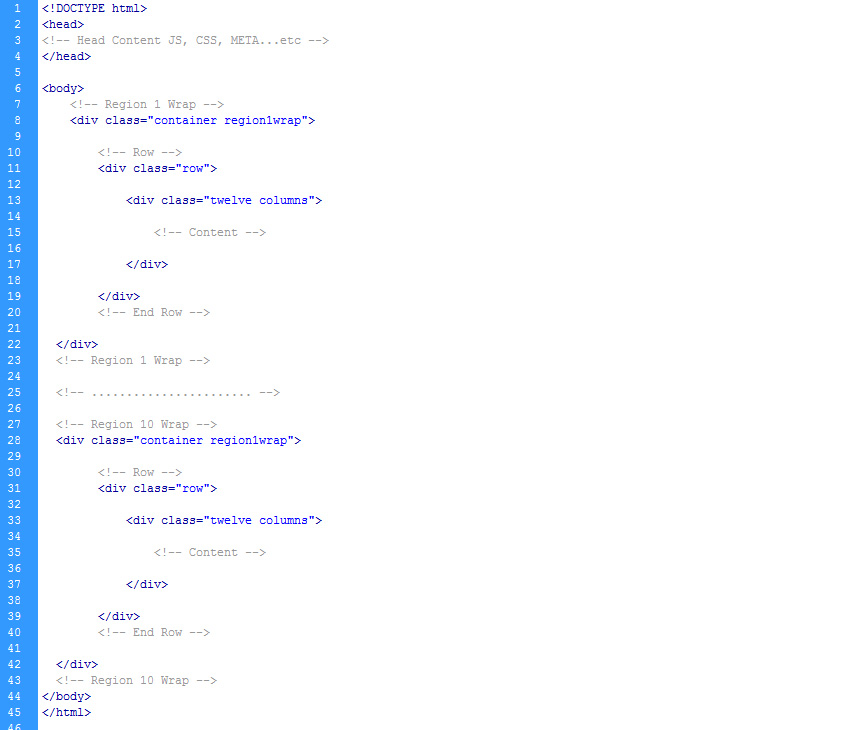
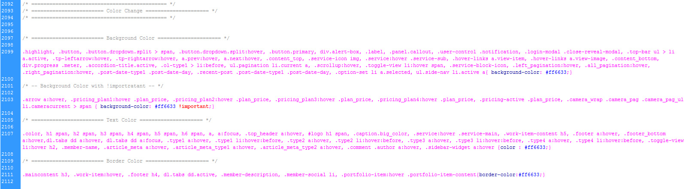

Font Awesome font directory. Contains over 220 icons.
The folder includes core images required for template. We provide over 20 backgrounds patterns to chose for your header.
All javascript of the foundation framework and others plugins used on the theme.
Includes all the js plugins used in the theme: Slider Revolution, Titan Lightbox, Flexislider and Camera
Contains css files for template's native styles and plugins styles. Also have the styles for 8 more colors.
The core html files of the theme (index, about, blog, portfolio, contacts...)
The theme uses Foundation v 3.0 framework by Zurb Foundation which is currently known as the most powerful responsive framework. The base of the template is 960px in 12 columns. The grid is built around two key elements: rows and columns. Rows create a max-width and contain the columns; columns create the actual structure. For layouts to work properly, always put your page content inside a row and a column.
This are the default Foundation Framework css. It includes app.css, foundation.css and foundation.min.css .
This is the default style of the theme. In the future update we will add some more style. This is used to overwrite all of the foundation styles so the foundation can be updated in the future with no problem.
This are the files that let you easy change your color of the website. Just load one of this in the head of the page after style1.css and your site will have a new color.
All logical entities are commented and have strict separation. In the screenshot below is a eaxample file.
If you would like to edit the color, font, or style of any elements in the theme just open style1.css, and have fun:
#menu li a { color: #someColor; width: 100px; }
If you find that your new style is not overriding, it is most likely because of a specificity problem. Scroll
down in your
CSS file and make sure that there isn't a similar style that has more weight.
#menu li#active-item a { color: #someColor; }
So, to ensure that your new styles are applied, make sure that they carry enough "weight" and that there isn't a
style lower
in the CSS file that is being applied after yours.
Changing color is easy. Just open color1.css or create a new css file and copy the css from color1.css .The color1.css looks like this:

Just change the color code on those 4 places and load your css in the page that you wish to have that color after style1.css .
We provide you with a nice group of PSD elements for you to edit and modify.